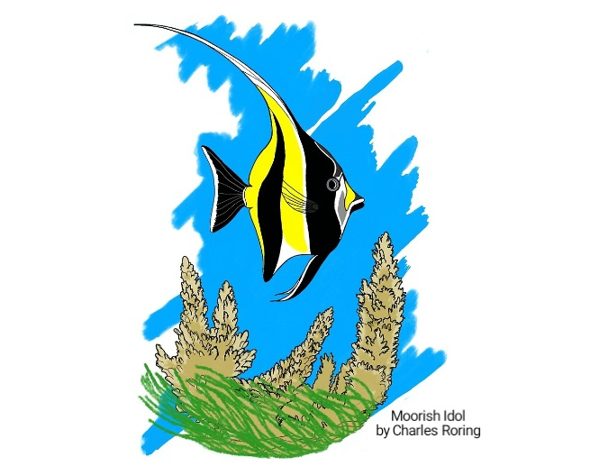
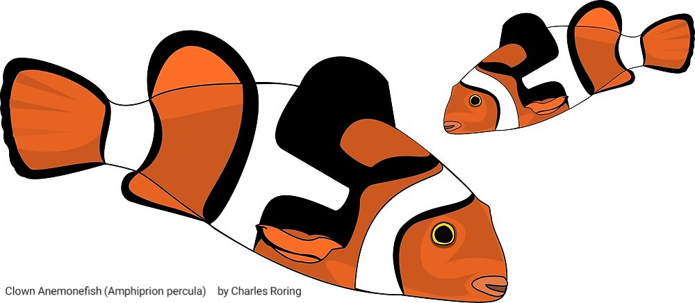
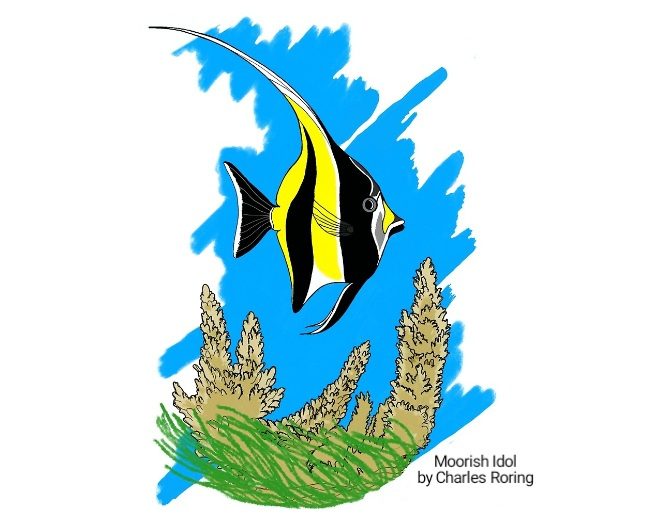
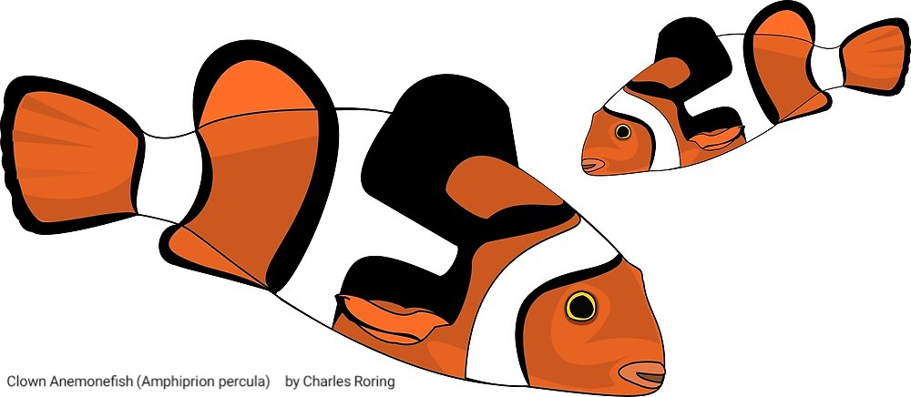
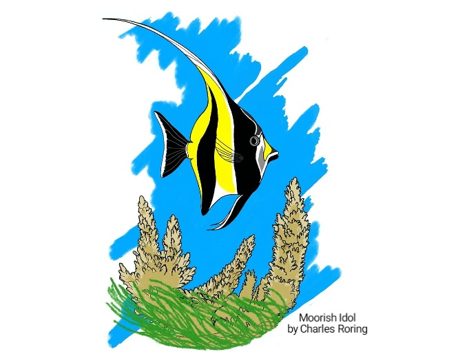
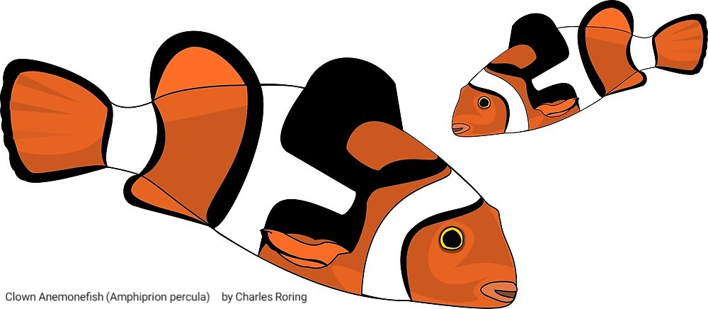
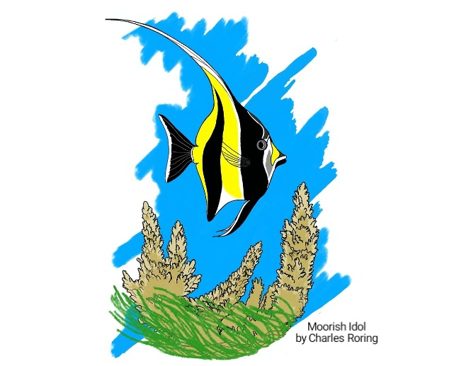
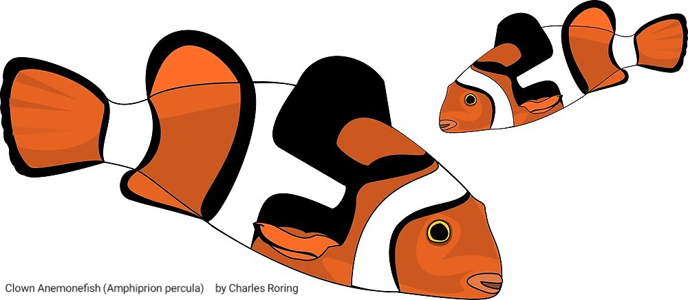

Art Drawing of Striped Surgeonfish and Convict Surgeonfish
Art Drawing of Moorish Idol
Vector Drawing of Clown AnemonefishArt Drawing of Striped Surgeonfish and Convict Surgeonfish
Art Drawing of Moorish Idol
Vector Drawing of Clown Anemonefish
Art Drawing of Striped Surgeonfish and Convict Surgeonfish
Art Drawing of Moorish Idol
Vector Drawing of Clown AnemonefishArt Drawing of Striped Surgeonfish and Convict Surgeonfish
Art Drawing of Moorish Idol
Vector Drawing of Clown AnemonefishThe following drawing depicts two species of surgeonfish that swim through coral reef. The blue one with horizontal dark blue and yellow lines is called Striped Surgeonfish (Acanthurus lineatus) whereas the white-yellow one with vertical black strip is Convict Surgeonfish (Acanthurus triostegus). I frequently see the Striped Surgeonfish in reef flat, crest and fore reef areas. It feeds on algae during the day. When I do snorkeling in the north coast of Manokwari, I often see the juvenile in shallow water. When big waves land on the beach bringing strong current, the fish swims against the current and sometimes hide behind a big hard coral. I hardly ever seen Striped Surgeonfish moving in the coral reef in large groups. I usually see them swimming alone, in pairs or several fish but not in a uniform pattern like a big group of schooling fish. For the Convict Surgeonfish, I used to see them in large group at depths of 5 meters below the surface feeding on alge on the surface of hard corals.
This is the drawing of Moorish Idol that I created last week. I often see the fish when I go snorkeling in such coral reef areas as Manokwari, Raja Ampat and Tambrauw. The fish has got an elongated dorsal fin that forms a sickle-shaped crest. The black, white and yellow bands that cover the fish's skin make it attractive to aquarium owners. However, the fish cannot live longer in aquarium ecosystem where naturally grown food resources are very limited. At sea, the fish travels across very wide area of the coral reef. He will be stressed if he has to live in a small confined water tank like home aquarium.
There are tens of species of anemonefish that I have seen. The drawing which you could see in this article is called Clown Anemonefish (Amphiprion percula). The fish is small compared to Red and Black Anemonefish, Spine-cheeked Anemonefish or even the Pink Anemonefish. I see it in Sausapor town in the north coast of birds head region of West Papua. The town faces the Pacific Ocean. It used to be the base of US forces when fighting against Imperial Japanese forces during World War II. I am happy to see that the coral reef in this region is healthy.
All the drawings presented in this article are now available in prints on various products such as t-shirts, spiral note book, mugs, pillows, iPhone case, Samsung Galaxy skin, clock, bag and a lot more. Please, have a look at each of them by clicking the picture or visit my Redbubble online shop at this link: Nature Art Shop.
written by Charles Roring